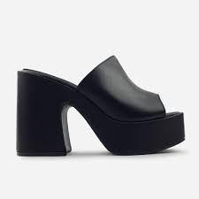
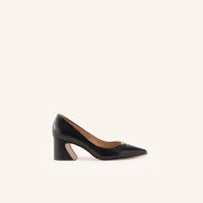
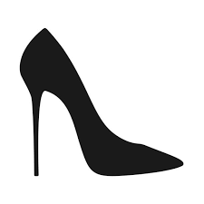

UN PAR PARA CADA ESTILO
Escoger los tacones perfectos puede transformar por completo tu look. Conocer los distintos tipos de tacones te permitirá tomar decisiones acertadas en términos de comodidad y diseño.



Escoger los tacones perfectos puede transformar por completo tu look. Conocer los distintos tipos de tacones te permitirá tomar decisiones acertadas en términos de comodidad y diseño.
Cargando comentarios de la comunidad... 🎀
Elegir correctamente el tacón no solo mejora la apariencia, sino que también influye en la comodidad y confianza al caminar.